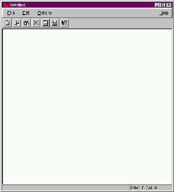

KEdit+

Version 0.4.1
News:
Solved the "tab" problem.: Tab's inserted are now real, honest
to goodness tabs. That is kedit+ is now Makefile save.
Contents
Introduction
Installation
Using kedit+
History
Author
Introduction
This is the documentation for kedit+ 4.1 . kedit+ is a small editor
for all your simple editing jobs. kedit+ 4.1, as its predecessors kedit+
4.0 and 2.0, are based in part on kedit 0.3.1 written by Alexander
Sanda with contributions by others.
I hope you will find it useful,
Bernd Johannes Wuebben
wuebben@kde.org
wuebben@math.cornell.edu
Installation
Requirements: You have to set the environment variables QTDIR and
KDEDIR first. Further you need the libraries
A simple
make
make install
should install kedit+ correctly
Using KEdit+
Usage is completely straight forward. If you have ever used a text edit
you will have no problems with kedit+. Please note that kedti+ is network
aware. You can open and save files transparently on the internet. Try for
example the following:
kedit ftp://ftp.kde.org/pub/Welcome.msg
to see how it works.
Key Bindings:
- Left Arrow Move the cursor one character leftwards
- Right Arrow Move the cursor one character rightwards
- Up Arrow Move the cursor one line upwards
- Down Arrow Move the cursor one line downwards
- Page Up Move the cursor one page upwards
- Page Down Move the cursor one page downwards
- Backspace Delete the character to the left of the cursor
- Home Move the cursor to the beginning of the line
- End Move the cursor to the end of the line
- Delete Delete the character to the right of the cursor
- Shift - Left Arrow Mark text one character leftwards
- Shift - Right Arrow Mark text one character rightwards
- Control-A Move the cursor to the beginning of the line
- Control-B Move the cursor one character leftwards
- Control-C Copy the marked text to the clipboard.
- Control-D Delete the character to the right of the cursor
- Control-E Move the cursor to the end of the line
- Control-F Move the cursor one character rightwards
- Control-H Delete the character to the left of the cursor
- Control-K Delete to end of line
- Control-N Move the cursor one line downwards
- Control-P Move the cursor one line upwards
- Control-V Paste the clipboard text into line edit.
- Control-X Cut the marked text, copy to clipboard.
History
kedit+ 0.4.1 (Bernd Wuebben)
- tabs are now handled correctly
kedit+ 0.4:(Bernd Wuebben)
- Bug fixes
- Fore and Background Color can now be changed
kedit+ 0.2:(Bernd Wuebben)
- Almost complete rewrite of kedit,
- added many new features
- complete redesign
Please review the changes of kedit, the program on whic kedit+ is partially
based.
Version 0.3.1 (Martin Hartig)
- usage of the kdehelp-browser
Version 0.3.0 (Torben Weiss)
- added Drag and Drop
- added network access.
- usage of libkdecore and libkfm
- bugfixes
- changing of some key bindings
- number of wondows is not limited any more
Author
KEdit+ was written by Bernd
Johannes Wuebben.